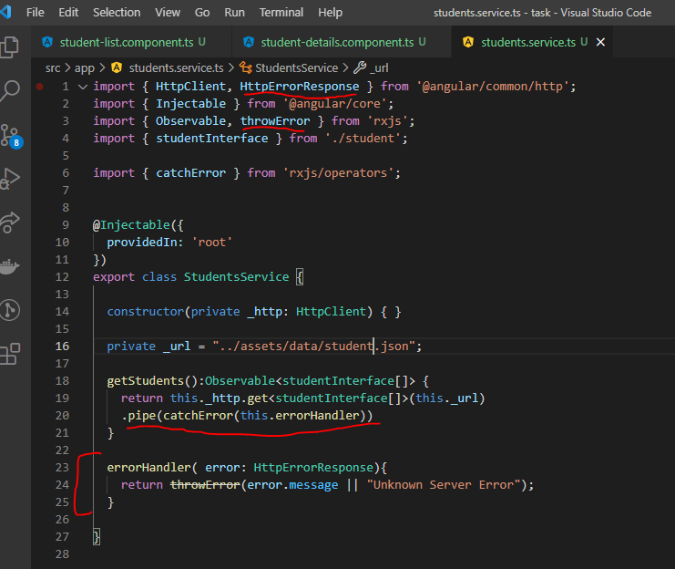
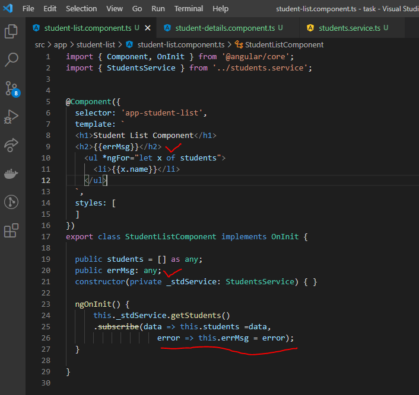
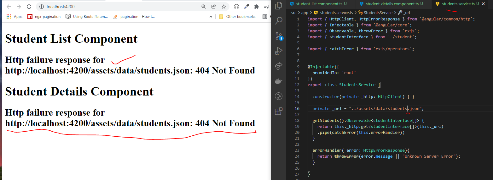

Error Handling
- If we get any exceptions(error) while getting response at that time View is not display anything, so to display the error messages on screen it helps the errorhHandling.
- In service.ts file, we have to import catchError. and also we have to pipe that.
- under errorHandler () we need to through the error message to subscribed components.

- In previous case we subscribe the response data into required components like the same way we need to receive the error as well.

- For example, To test the HttpErrorHandling I have update wrong service file and let see what happened after adding the errorHandling.
